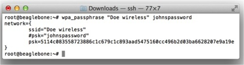
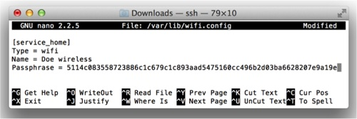
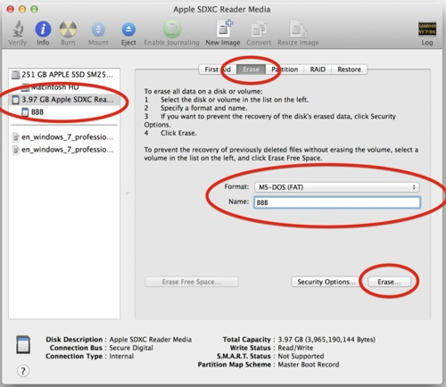
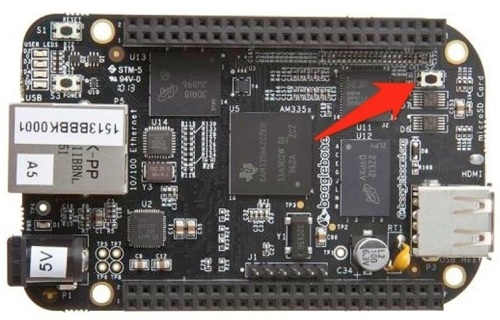

QuickBot MOOC v2 -- Configuring
- 1. SSH Into BeagleBone Black (BBB)
- 2. Set the Time on the BBB Manually
- 3. Configure the Wifi
- 4. Configure Time to Set Via the Internet
- 5. Install Necessary Libraries
- 6. Configure Git
- 7. Get the Git Repository and Set It Up
- 8. Set the Serial Setup Script to Run on Startup
- A. Optional
- B. Troubleshooting
1. SSH Into BeagleBone Black (BBB)
Adafruit has a great tutorial on how to SSH into the BBB over USB at
https://learn.adafruit.com/ssh-to-beaglebone-black-over-usb/overview
So, navigate to this page and follow the tutorial to SSH into your BBB via USB.
- If you get an error that says,
WARNING: REMOTE HOST IDENTIFICATION HAS CHANGED!when you try to SSH into the BBB, don’t worry. This just means you are using two or more BBB with your computer. To fix this error you need to delete the line with your BBB IP address (192.168.7.2) from the file SSH know hosts file (~/.ssh/know_hosts), which can be done with any text editor. After that modification, you will be able to SSH into the BBB.
2. Set the Time on the BBB Manually
For your BBB to operate correctly it needs to have the correct time.
You can check the time with the date command.
First, you need to set the time zone that you are in. The command you will use is similar to this one
>> ln -sf /usr/share/zoneinfo/America/New_York /etc/localtime
Make sure to change the America/New_York to the major city in your time zone.
You can see which city to use with
>> ls /usr/share/zoneinfo
Since, your BBB is not connected to the internet yet you will have to set the time manually. The command to set the time looks like this
>> date -s "1 JUN 2014 15:30:45"
So, use this command to set the time with your current local time.
Then test to see that it worked with just >> date.
3. Configure the Wifi
Plug in your Wifi adapter and restart your BBB with this command:
>> reboot
(You should see the green lights on the Wifi adapter turn on when your BBB starts back up.)
Once your BBB reboots, SSH back into it. Check that your BBB recognizes the Wifi adapter with the following command:
>> ifconfig ra0
If you don’t get an error, then it is working. If you do get an error try rebooting the BBB again.
To configure your Wifi settings (assuming you are using WPA encryption) do the following command,
>> wpa_passphrase "YOUR NETWORK NAME HERE" 'YOUR NETWORK PASSWORD HERE'
For example:

Now, edit the Wifi configuration file at /var/lib/connman/wifi.config with the following:
>> nano /var/lib/connman/wifi.config
[service_home]
Type = wifi
Name = YOUR NETWORK NAME HERE
Passphrase = YOUR ENCRYPTED PASSPHRASE HERE
(Use ctrl-x, y, enter to save and exit the nano text editor)
For example:

Reboot the BBB (>> reboot) and SSH back in.
Then check to see if you have a wifi IP address with
>> ifconfig ra0 | grep "inet addr"
Also, check that you are connected to the internet with
>> ping -o www.google.com
If you get 0% packet loss then you are good.
4. Configure Time to Set Via the Internet
Let’s set the BBB to set its time automatically using the internet with the following commands:
>> ntpdate -b -s -u pool.ntp.org
>> /usr/lib/connman/test/set-global-timeservers pool.ntp.org
5. Install Necessary Libraries
There a few Python libraries that need to be installed. Run the following commands:
>> opkg update
>> opkg install python-pip python-setuptools python-smbus
>> pip install Adafruit_BBIO pyserial
If you get any errors check to see that your date is set correctly.
6. Configure Git
All the code for the QuickBot lives on a Git repository, but before you can clone the repository you need to configure Git.
To do this edit the ~/.gitconfig file with the following:
>> nano ~/.gitconfig
[user]
name = Rowland O'Flaherty
email = rowoflo@gmail.com
[http]
sslVerify = false
[push]
default = current
Optionally you can add some additional configuration to the end of the file that make Git a little nicer to work with.
[color]
ui = true
branch = auto
diff = auto
interactive = auto
status = auto
[alias]
co = checkout
br = branch
ci = commit
st = status
unstage = reset HEAD --
untrack = rm --cached --
discard = checkout --
last = log -1 HEAD
visual = !gitk
The color options give Git some colorful output and the alias are shortcut commands so you don’t have to type those tediously long commands.
6a. Optional Configurations
If you would like your shell prompt to look a little nicer and want to Git to do some auto-completion then do the following:
Download Git auto-completion script with your local machine and move to BBB.
- Open new terminal window
- Run this command:
>> wget "https://raw.githubusercontent.com/git/git/master/contrib/completion/git-completion.bash" git-completion.bash
- Copy this file to the BBB home directory with this command:
>> scp git-completion.bash root@192.168.7.2:/home/root/
- Remove file from local machine
>> rm git-completion.bash
- Change back to BBB terminal window
- Move script to
~/.gitscriptsfolder with these commands:>> mkdir ~/.gitscripts>> mv ~/git-completion.bash ~/.gitscripts
Edit ~/.profile to load git-completion.bash script and add some additional goodies with the following:
>> nano ~/.profile
# Setting command prompt and other command colors
PS1='\[\e[1;34m\][\u@\h \W]>>\[\e[0m\] '
alias ls='ls -G'
export CLICOLOR=1
export LSCOLORS=Gxfxcxdxbxegedabagacad
alias ll='ls -lah'
alias grep='grep --color=auto'
# Setting variables
export SLOTS=/sys/devices/bone_capemgr.8/slots
export PINS=/sys/kernel/debug/pinctrl/44e10800.pinmux/pins
export GPIO=/sys/class/gpio
# Source scripts
source ~/.gitscripts/git-completion.bash
Apply the new configuration with:
>> source ~/.profile
7. Get the Git Repository and Set It Up
Get the code with:
>> cd ~
>> git clone https://github.com/o-botics/quickbot_bbb.git
8. Set the Serial Setup Script to Run on Startup
There is a script that needs to run each time the BBB boots up to set up the serial devices. You can run this script manually with
>> ~/quickbot_bbb/serial/setup.sh
But it is nice if this happens automatically on boot up. Create a service file and add the following:
>> nano /lib/systemd/system/serialsetup.service
[Unit]
Description=Sets up serial devices for BBB.
After=syslog.target network.target
[Service]
Type=simple
ExecStart=/home/root/quickbot_bbb/serial/setup.sh
[Install]
WantedBy=multi-user.target
Make a symbolic link to the service file:
>> ln -s /lib/systemd/system/serialsetup.service /etc/systemd/system/serialsetup.service
Active the service:
>> systemctl daemon-reload
>> systemctl start serialsetup.service
>> systemctl enable serialsetup.service
Next time your BBB the serial devices will be setup automatically, but now you can just setup them up manually.
Now your BBB is all setup to run the code.
A. Optional
Setup ability to SSH into BBB with IP address and no password
It is annoying having to type ssh root@192.168.7.2 then wait to enter for at the password prompt in order to log into the BBB.
To simplify things you can setup an SSH key so you can just type something like ssh bbb.
On your local machine create an SSH key with the following:
(If you do not already have a ~/.ssh folder)
>> mkdir ~/.ssh
>> chmod 700 ~/.ssh
(If you already have a ~/.ssh folder)
>> cd ~/.ssh
(If you do not already have a public key)
(Hit enter to keep all default options with no password)
>> ssh-keygen -t rsa
>> scp ~/.ssh/id_rsa.pub root@192.168.7.2:/home/root
>> nano config
Host bbb
HostName 192.168.7.2
User root
IdentityFile ~/.ssh/id_rsa
SSH into the BBB with the normal ssh root@192.168.7.2
>> mkdir -p ~/.ssh
>> cat ~/id_rsa.pub >> ~/.ssh/authorized_keys
>> rm id_rsa.pub
>> chmod 600 ~/.ssh/authorized_keys
>> chmod 700 ~/.ssh
Log out of BBB with crtl-D or >> exit and log back in with
>> ssh bbb
Easy!
B. Troubleshooting
If things are working like I make them out to work above try the following.
Flash Latest Angstrom OS onto the BBB
1. Download BeagleBone Black (eMMC flasher) from the BBB website:
http://beagleboard.org/latest-images/
2. Flash image onto microSD card
(Mac Version to flash image onto microSD card)
-
Plug the microSD card into computer and open “Disk Utility.app” (/Applications/Utilities/Disk Utility.app)
- Select the mircoSD card in left column and click the “Erase” tab.
- Set the format to MS-DOS (FAT), name “BBB”, and click “Erase…” button.

- Extract “BBBeMMCflasher2013.09.04.img” from archived file in “Downloads” folder.
-
Open Terminal.app (/Applications/Utilities/Terminal.app) and enter the following commands:
>> cd ~/Downloads>> diskutil list - Look for the “BBB” disk number. (In the image the disk number is 2).

-
Enter the following commands into the terminal:
>> diskutil unmountDisk /dev/disk#(Use the disk number you found from above instead of the # symbol)
>> sudo dd bs=2m if=BBBeMMCflasher2013.09.04.img of=/dev/rdisk#(Notice that there is an “r” front of disk. Also, again use the disk # number from above.)
- Enter your password and wait 1530 minutes. Note: the operation gives no feedback until it is done.
-
Eject disk from computer.
>> diskutil eject /dev/disk#
3. Flash microSD card to BBB
- Power down and unplug BBB.
- Insert microSD card into BBB.
- Hold down the “User Boot” button (see image below) while powering up the BBB (USB or 5V adaptor).
- Continue to hold button until all 4 LEDs begin to flash then release the button.
- Wait ~1-2 hours until all 4 LEDs are lit up at the same time.
- Power down BBB.
- Remove microSD card.
